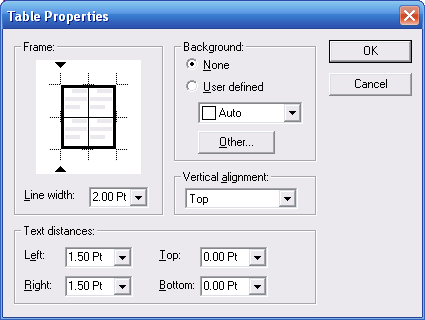

|
Table Properties (Table Menu) Proposal Maker Main Topics (List) Proposal Maker Menus (List) |
  
|
Table Properties (Table Menu)
Proposal Maker Main Topics (List) Proposal Maker Menus (List)
|
Table Properties (Table Menu) Proposal Maker Main Topics (List) Proposal Maker Menus (List) |
|
Icon: Keyboard shortcut: Alt, A, R
Opens the Table Properties dialog, where you can set various aspects of the table's appearance. The properties will be applied to only those table cells that were selected when you opened the dialog.

Frame: Lets you set the border and line width for each part of the table grid. When you select a line width it is applied to the line indicated by the two small arrows in the diagram. You can then click on additional lines in the diagram to apply that same line width to them, or you can apply different widths to different lines (as pictured above).
Background: Specifies the background color of the table cells. Unlike the Highlighttool that only sets the background color for text, setting the background color of table cells fills the whole cell rectangle with the specified color.
Vertical alignment: Specifies the vertical position of text within each table cell.
Text distances: Specifies the amount of buffer space between text in a cell and the cell border.